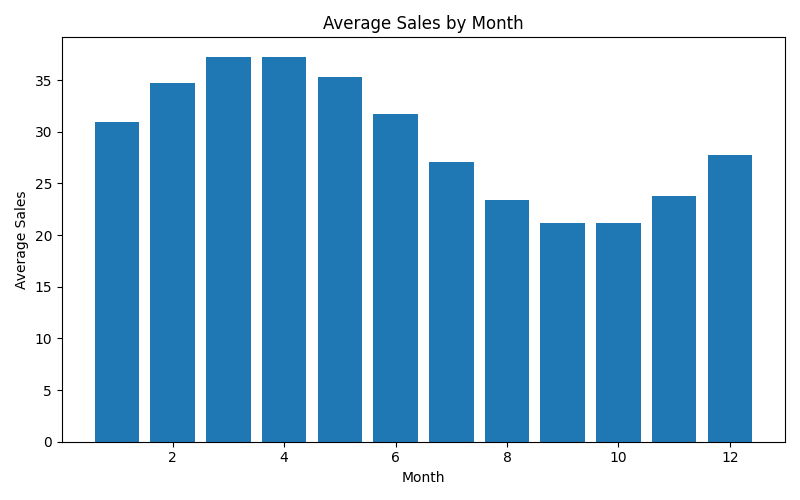

This report analyzes how sales vary across months to identify long-term seasonal demand patterns.

Demand follows a clear yearly cycle. Early months show strong performance, while late summer and early autumn experience reduced activity.
Monthly seasonality is a key driver of demand and must be incorporated into forecasting models for accurate predictions.